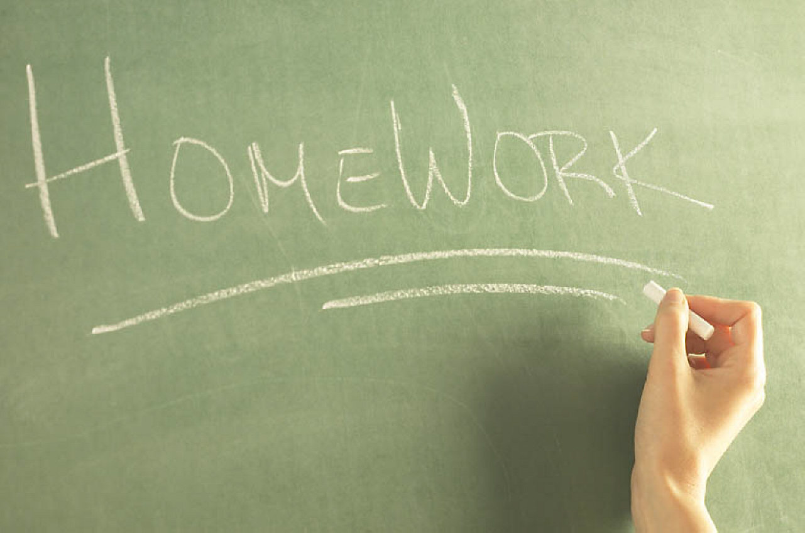
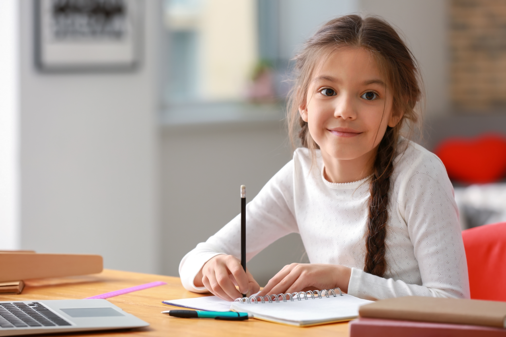
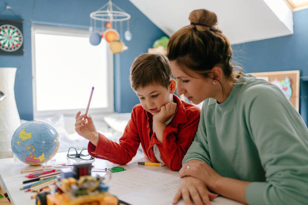
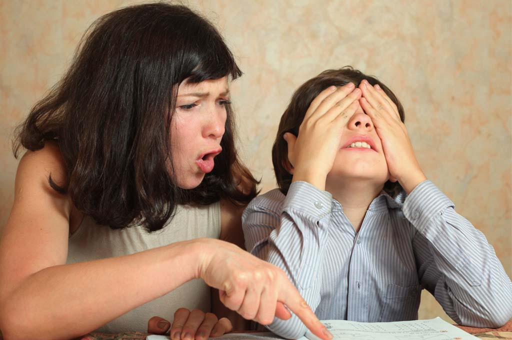
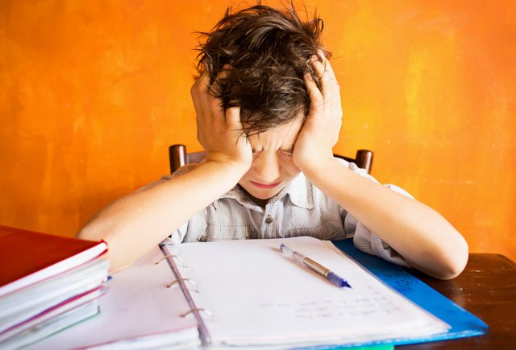
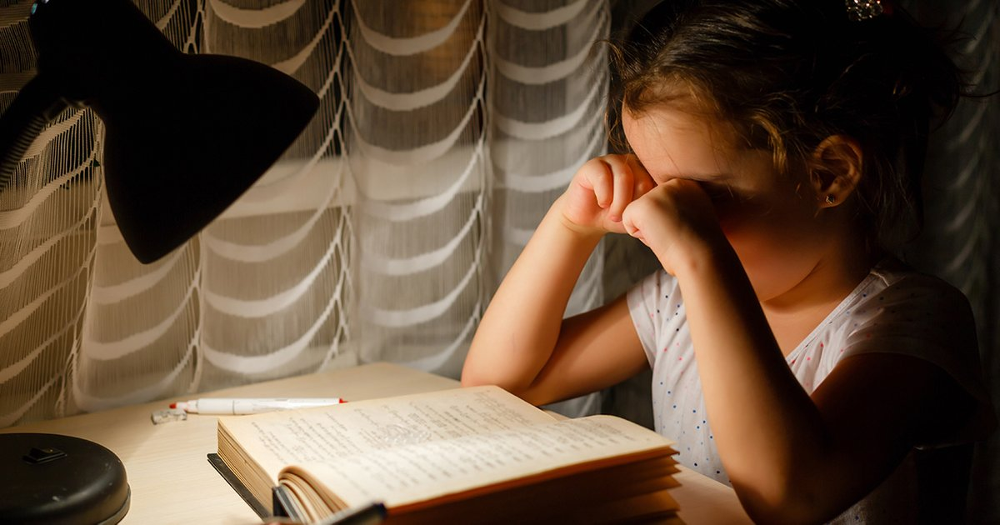

О сайте:

Домашняя работа — важная часть нашей учебы. Без нее практически невозможно научиться чему-либо.
Эта страница посвещена как раз важности домашних работ, преимуществам и недостаткам, которые онa предлагает.
Положительные стороны:
- Помогает разобраться с материалом самому.
- Есть чем заняться дома.
- Меньше нагрузки в классе.
- Можно использовать как отмазку, если не хочется что-то делать.
- В детстве может помочь узнать семью ближе.


Реальность:
- Далеко не всегда это получается все сделать быстро, из-за чего поялвяются проблемы со сном и накапливается стресс.
- Как правило, дома есть более интересные занятия, на которые после домашней работы времени нет.
- Приходится дома делать столько же, сколько и в классе, если не больше, но уже без учителя.
- Как правило хочется сделать что угодно, только не домашнюю работу.
- Иногда лучше не знать свою семью настолько близко.



Вывод:
Несмотря на все перечисленные минусы, домашняя работа стала неотъемлимой частью нашей системы образовния и жизни каждого.
Невозомжно представить, как бы школьники справлялись с учебой без нее.
Не только школьники, но родители частенько вынеждены просидеть несколько вечеров после работы, чтобы помочь своим детям.
Благодаря этому, взаимоотношения в семьях укрепляются и количество знаний, передаваемых из поколения в поколение, увеличивается.